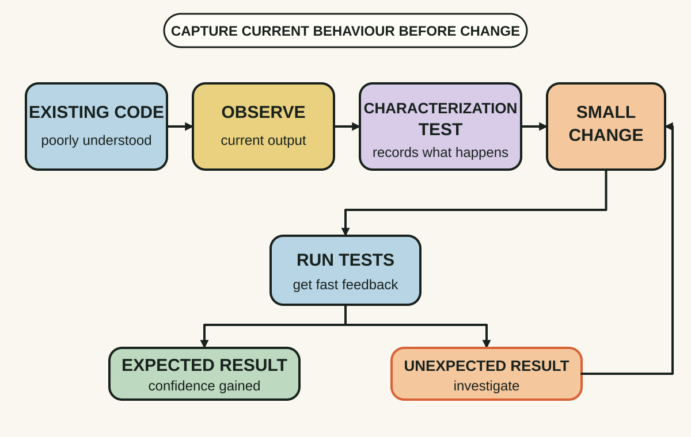
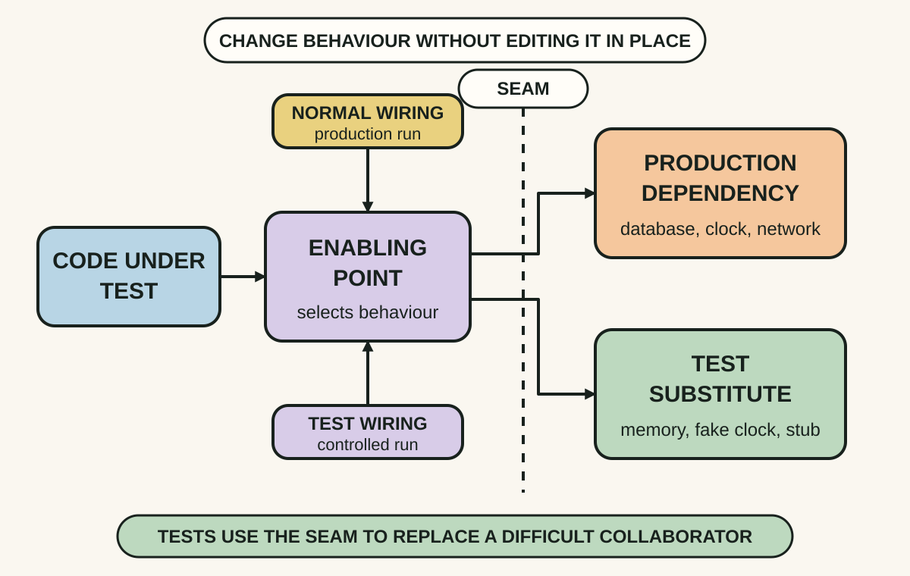
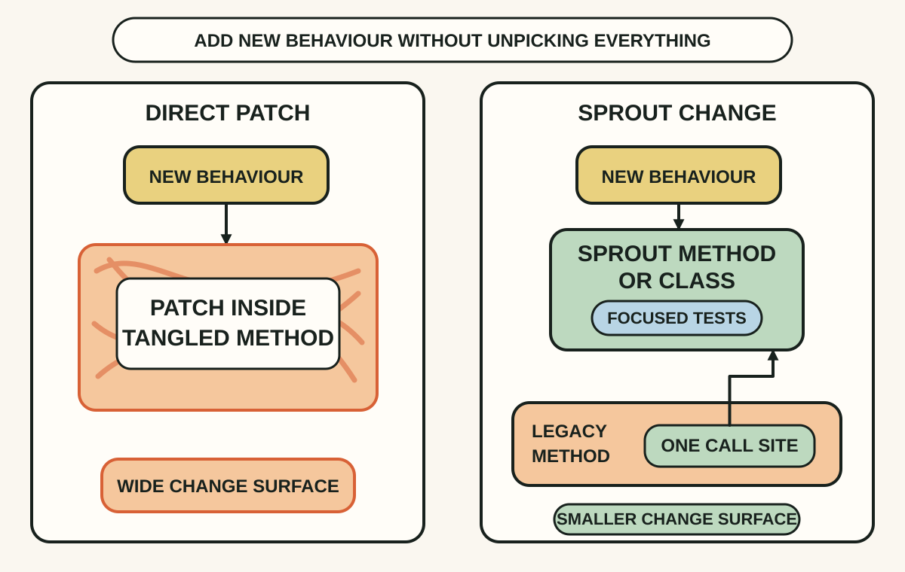

Daily lesson ·
Working Effectively with Legacy Code
Change risky code in controlled steps by building feedback around real behaviour, finding seams that isolate dependencies and sprouting new tested code beside the old.
Idea 1
Build a feedback path before a bold change #
The idea
Feathers uses a strict working definition: legacy code is code without tests. The point is not to insult old software or declare tests sufficient for quality. It is to expose the practical problem: when current behaviour cannot be checked quickly, developers cannot tell whether a change improved the code or quietly damaged something else.
His change approach starts by identifying where behaviour must change, finding places to observe it, breaking only the dependencies needed to run that code, writing focused tests, then making the change and refactoring. Characterization tests capture what the system actually does so existing behaviour becomes visible before you decide what should change.

Why it matters
Without fast feedback, teams manage risk by avoiding structural improvement or relying on long manual checks. A focused harness makes small, safer changes possible and gradually grows understanding.
Apply it today
Choose one change you have been avoiding. Write the behaviour you intend to alter and one existing behaviour that must remain.
Name the nearest place you can observe both. Draft one focused test that would fail if the preserved behaviour moved.
Caveat or failure mode
A characterization test records observed behaviour, including bugs and accidental quirks, and only covers the paths you exercise. Preserve first when uncertainty is high, then decide explicitly which behaviour is correct; retain integration and system checks for effects a unit harness cannot see.
Idea 2
Find the seam and its enabling point #
The idea
Feathers defines a seam as a place where you can alter program behaviour without editing at that place. A call to a database, clock, filesystem or remote service becomes testable when another implementation can be selected while the caller stays unchanged.
Every seam has an enabling point: the place where the choice is made. It may be a constructor argument, overridden method, link configuration, build setting or another mechanism. Seeing both matters because a supposed abstraction is not useful for testing if there is nowhere to substitute the collaborator.

Why it matters
A well-placed seam lets you sense and separate a small area without rewriting its whole dependency graph. That can create just enough feedback for a safer change.
Apply it today
Pick one dependency blocking a focused test and mark the exact call whose behaviour you need to replace.
Then mark where the implementation could be chosen. Prefer an explicit object seam such as an argument or constructor when the code allows it.
Caveat or failure mode
Not every indirect call is a useful seam, and test-only indirection can make production design harder to understand. Build or link seams can also hide differences between test and production. Use the smallest explicit substitution that preserves real behaviour and keep broader integration checks.
Idea 3
Sprout tested behaviour beside the risk #
The idea
Under time pressure, Feathers offers Sprout Method and Sprout Class for adding behaviour when the surrounding code cannot yet be placed under test. Write the new logic in a new method or class that can be developed with focused tests, then make the smallest delegation from the old code.
This does not make the legacy area safe or clean. It creates a small island of understood behaviour and prevents the new rule from becoming another untestable tangle. A sprout class is especially useful when the new work has a distinct responsibility or the old class is already overloaded.

Why it matters
Waiting for a full rewrite can delay useful change indefinitely, while inserting more logic into an untested method increases future risk. A sprout provides a middle path.
Apply it today
For one urgent change, separate the new calculation or decision from the code that triggers it.
Choose a method if the behaviour fits the current responsibility; choose a class if it introduces a new responsibility or needs its own dependencies. Test the new unit before adding the single delegation.
Caveat or failure mode
A sprout adds indirection and tests only the new unit, not the old call path or integration. Repeated sprouts can fragment a design. Use them to improve the local trajectory, then add broader coverage and consolidate responsibilities when evidence and time permit.
Knowledge check · 6 questions
Learning check
Answer all 6, then check your answers. Your first result stays in this browser, and each explanation appears after you check. A 3-question review can appear on the homepage from tomorrow.
6 questions not yet answered.
Today's experiment · 10 minutes
Draw one safe-change path
- Pick a small change you expect in risky code. Write the new behaviour and one behaviour that must remain.
- Mark the change point and the nearest place you can observe the preserved behaviour.
- Name the dependency preventing a focused test. Mark a candidate seam and its enabling point.
- Decide whether the new behaviour could sprout into a tested method or class with one narrow delegation.
- Write the smallest first test and one integration check that would still be needed.
Observable result: You finish with a bounded route from risky change to observable feedback, plus the uncertainty that route does not cover.
Verification
Source notes
These links support the attributed claims and edition details; applications and extensions are labelled in the lesson.
One-sentence takeaway